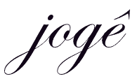
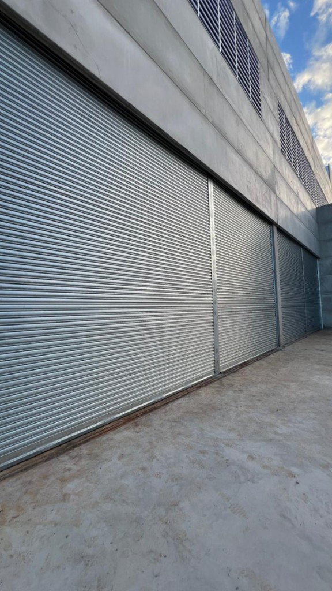
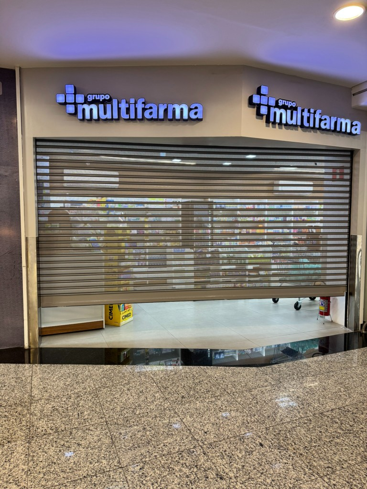
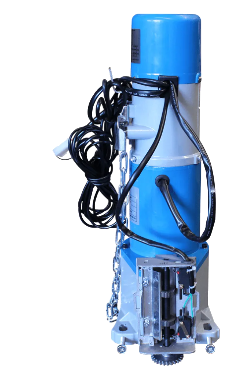
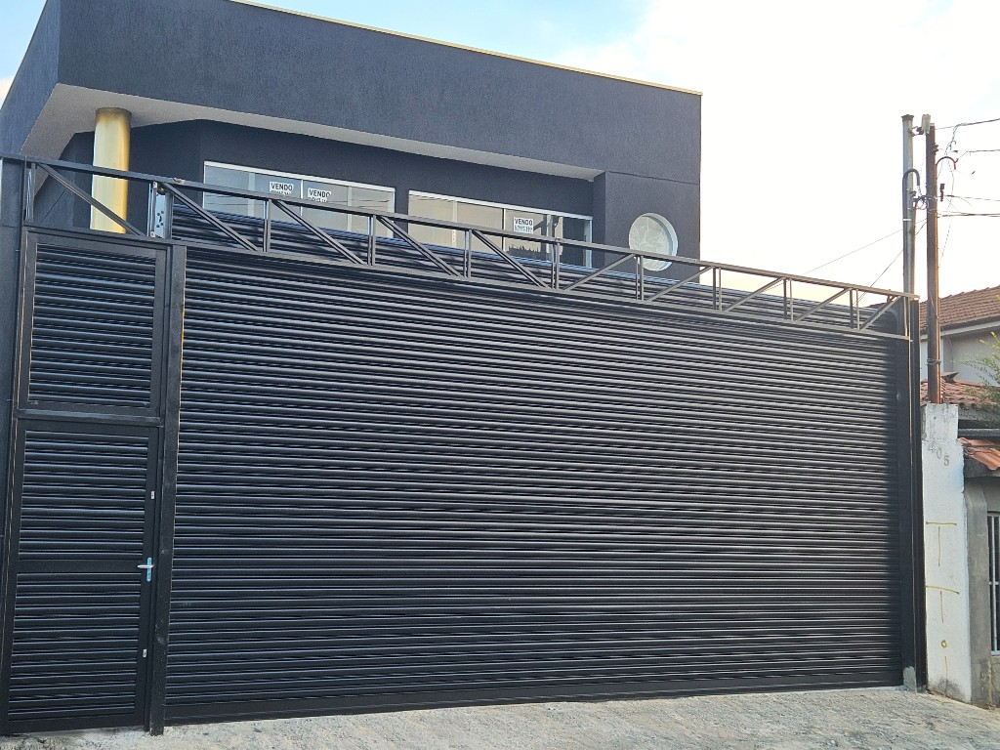
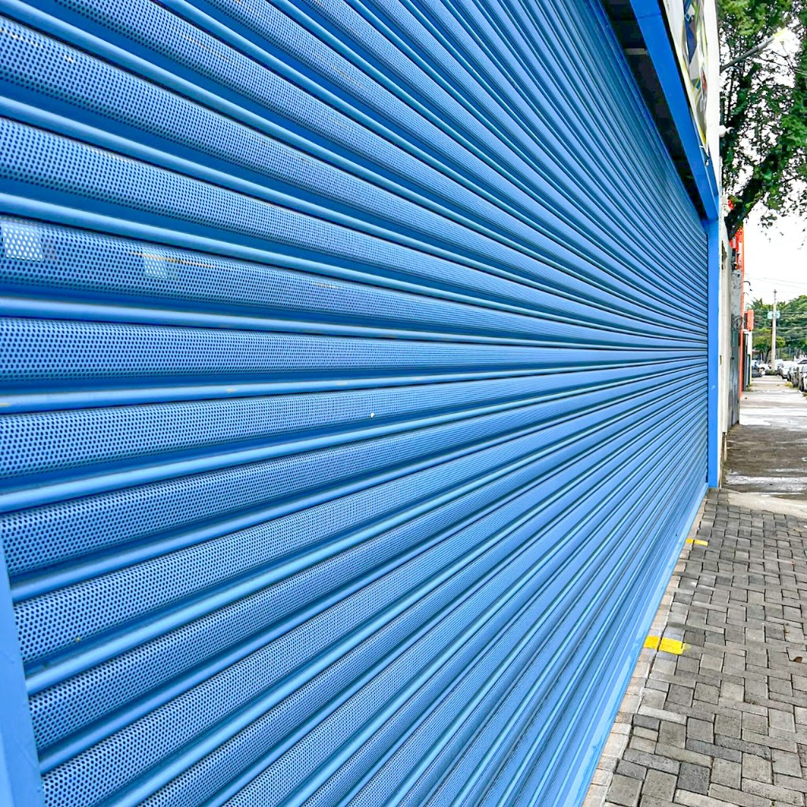
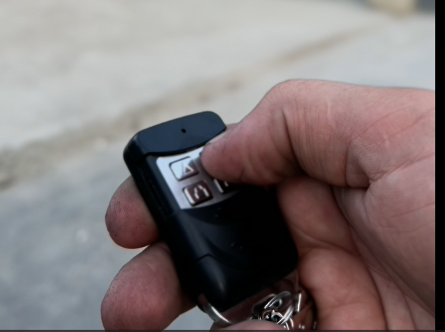
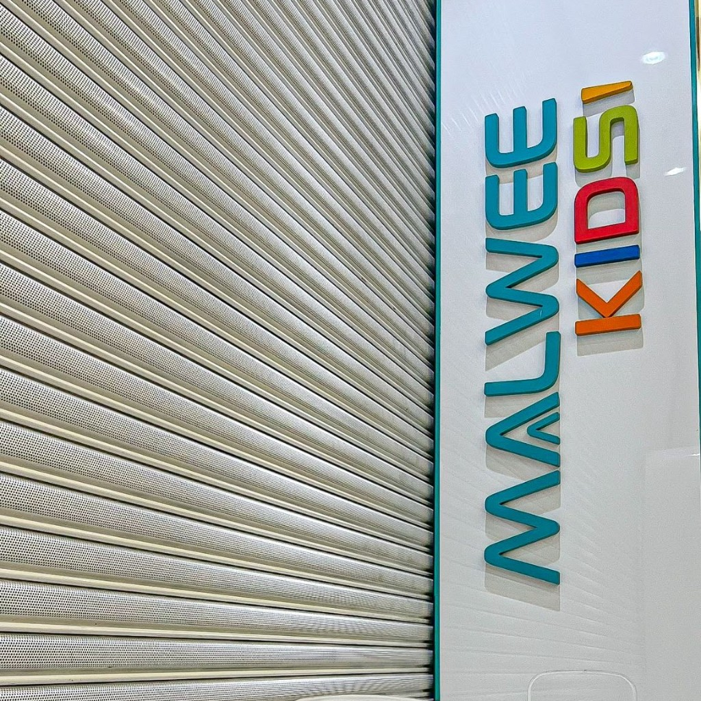
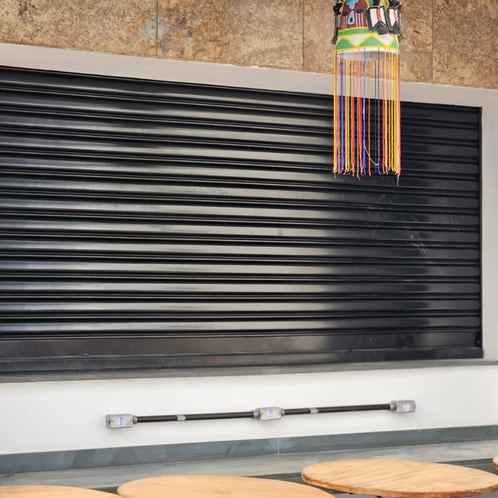

Empresa com Responsabilidade Técnica - RegistroCREA
Fabricação própria com selo de qualidade K Portas®. Atendimento técnico especializado para Shoppings, Galpões Logísticos e Comércios de Rua.
Empresas e instituições que confiam na engenharia K Portas



A Segurança que Construtoras e Grandes Lojas Exigem.
Acompanhamento técnico exclusivo garantindo a precisão legal e estrutural da sua obra de ponta a ponta.
Tranquilidade total em peças e serviços de manutenção com a chancela de fábrica K Portas®.

Robusteza máxima com aço espesso, perfeito para alto fluxo de docas e áreas logísticas.

Visibilidade e sofisticação para vitrines de alto luxo, com ventilação e design refinado no período noturno.

Motores padrão e de alto fluxo, desenvolvidos para comércio, lojas e galpões, com e sem nobreak de máxima confiabilidade. A K Portas trabalha com as melhores marcas e componentes. Todos os motores acompanham a garantia de fábrica.
Integração digital absoluta. Controle o motor, defina permissões de acesso e agende a abertura da sua porta através da tela do seu Smartphone.
A solução clássica e robusta para comércios de rua. Fabricação própria em aço galvanizado com sistema de molas reforçadas.
Confira nossas condições para automatização. Mais conforto e segurança brutal para o seu dia a dia!
"Transforme sua porta automática em um sistema inteligente. Compatível com nossa linha industrial, comercial e residencial."
Serviços executados sob supervisão técnica, garantindo a segurança operacional do seu imóvel.
Evite paradas inesperadas com planos de revisão técnica periódica, lubrificação e ajuste de motores.
Atendimento ágil para reparos emergenciais, troca de molas, lâminas e componentes eletrônicos.
Nossas portas são entregues completas e personalizadas para o seu projeto, desde o acabamento estético até as normas de segurança obrigatórias.
Acabamento premium com alta durabilidade e resistência à corrosão. Diversas cores disponíveis.
Soluções de acesso social e emergência integradas à estrutura da porta, com segurança reforçada.
Atendimento FOB rápido e inteligente, entregando kits montados para todo o território brasileiro.
Fabricação e parametrização com garantia de conformidade técnica ativa nas NRs 10, 12 e 35.
Reforço estrutural com barras e travas específicas para locais descampados ou com alta incidência de ventos, garantindo a estabilidade da porta. Exija uma porta de aço reforçada contra vento com rígida trava antivento para porta de enrolar.
Personalização Total: Escolha entre lâminas fechadas, transvision (microperfuradas) ou vazadas, todas compatíveis com nossos sistemas de reforço estrutural.
Soluções completas com estoque à pronta entrega para serralherias e construtoras.
A solução completa e prática para o profissional. Kit sob medida com lâminas, guias, eixo e acessórios, pronto para a instalação.
Tecnologia de alta performance, potência e eficiência energética.
Aço galvanizado de alta resistência (Transvision e Fechada).
Controles, centrais de comando, antiquedas e travas de segurança.
Acabamento premium com alta durabilidade e resistência à corrosão (Maresia). Diversas cores disponíveis.
Eixos tubulares, guias laterais e soleiras reforçadas em aço galvanizado sob medida.
Projeto de Expansão 2026: Ampliando nossa capacidade produtiva para atender todo o Brasil.
Logística ágil e equipes prontas para grandes obras em toda a malha paulista.
Logística própria preparada para atender desde o Interior até as regiões litorâneas com agilidade e segurança.
Galeria de instalações técnicas, provando nossa capacidade executiva nas maiores obras paulistas.

Porta com Portão Social e Estrutural

Comércio com Pintura Eletrostática

Manutenção Especializada - Capital

Porta Transvision - Shopping SP

Projeto sob Medida Porta Balcão
Porta de Loja
Fabricação Própria com Agilidade e Logística Otimizada para todo o estado de SP.
Nosso Diferencial: Visita Técnica de Conferência após o fechamento do pedido. Realizamos a medição fina e consultoria no local antes de iniciar a fabricação, garantindo 100% de precisão e segurança. Medição e conferência técnica acompanhada por nossa engenharia.
Nossa equipe é periodicamente treinada e certificada, garantindo total conformidade com as normas de SSMA para atuar em obras de engenharia, indústrias e condomínios com segurança máxima.
Especialistas em Trabalho em Altura.
Uso rigoroso de EPIs e proteção individual em todas as etapas.
Conformidade em Máquinas e Equipamentos.
Temos preços e prazos exclusivos para Revendedores e Parceiros.
CONSULTAR PREÇO DIFERENCIADOA primeira etapa, após o fechamento do pedido, é a nossa Visita Técnica de Conferência. Em seguida, efetuamos a expedição com Agilidade e Logística Otimizada e instalamos em média de 3 a 7 dias úteis para a Grande SP, dependendo da complexidade do projeto e acabamento.
Sim! Possuímos logística própria para atender todo o estado de SP, incluindo Interior e Litoral, com equipes treinadas para instalação e assistência técnica rápida.
Sim! Atendemos todo o território nacional com o fornecimento de kits e materiais completos. A coleta é realizada por transportadora de preferência do cliente (Modalidade FOB) em nossa unidade fabril.
Sim, realizamos manutenção corretiva e preventiva em portas de aço automáticas e manuais, garantindo o funcionamento seguro do seu estabelecimento.
Aceitamos cartões de crédito, boleto bancário (sob consulta) e oferecemos condições especiais para faturamento direto para empresas e condomínios. Garantimos o melhor Preço para Serralheiro em peças e no Kit de Porta de Enrolar. Consulte nosso canal de parceiros para solicitar Faturamento para Revenda com Condições e Preços Diferenciados para Serralheiros e Revendedores.
Sua dúvida não está aqui?
Fale conosco agora pelo WhatsAppDeixe seu contato para uma consultoria técnica gratuita.
"Material de excelente qualidade, pontualidade na entrega e equipe de instalação muito educada. Recomendo!"
- Renato S.
"Fábrica de confiança. Cumpriram o prazo e a pintura eletrostática ficou impecável."
- Cláudia R.
"Atendimento nota 10 desde o orçamento até a entrega técnica. Preço justo pela qualidade entregue."
- Marcos T.